Die Küste im November
66 der 80 Arten und Funde kannst du im November erwarten, 32 davon besonders häufig.
- Nord- und Ostsee Eiderenten und Mantelmöwen aus dem Norden sind jetzt zahlreich an der Küste.
- Nordsee Kegelrobben bekommen von November bis Januar ihre Jungen.
- Nord- und Ostsee Herbststürme bringen Bernstein, Donnerkeile und Hühnergötter an den Strand.
- Nordsee Nach Sturm liegen Seesterne und Herzigel im Spülsaum.
Jetzt besonders gut zu sehen
-
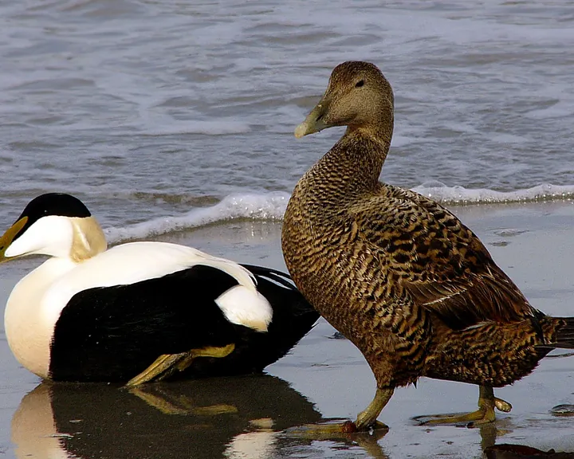
NordseeOstseeEiderente
SeevögelGroße, schwere Meeresente. Das Männchen ist schwarz-weiß mit grünem Nacken, das Weibchen braun gebändert.
-
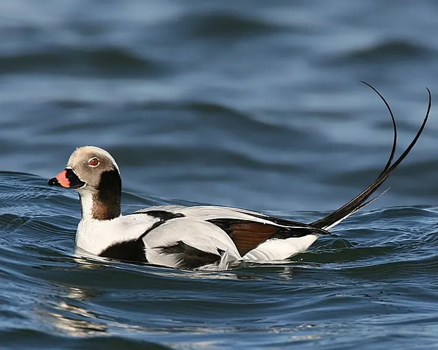
NordseeOstseeEisente
SeevögelKleine Meeresente, im Winter auffällig weiß mit dunklen Flecken; das Männchen hat lange, spitze Schwanzfedern.
-
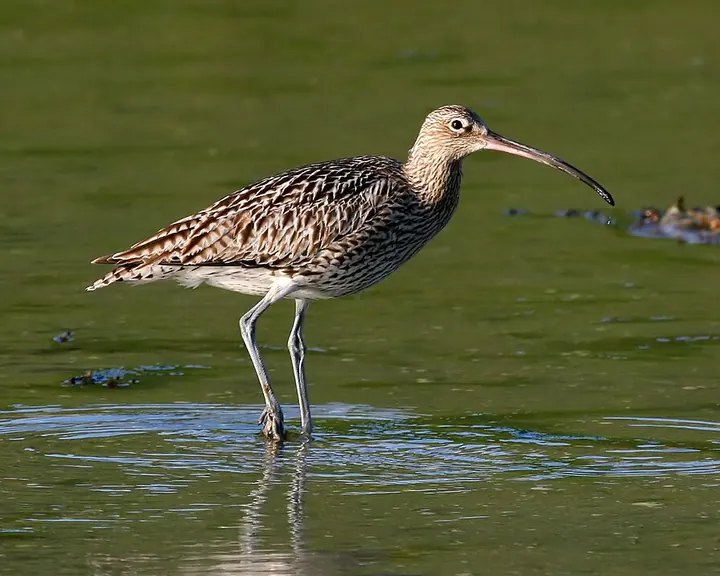
NordseeOstseeGroßer Brachvogel
SeevögelGrößter Watvogel Europas, braun gesprenkelt, mit sehr langem, nach unten gebogenem Schnabel.
-
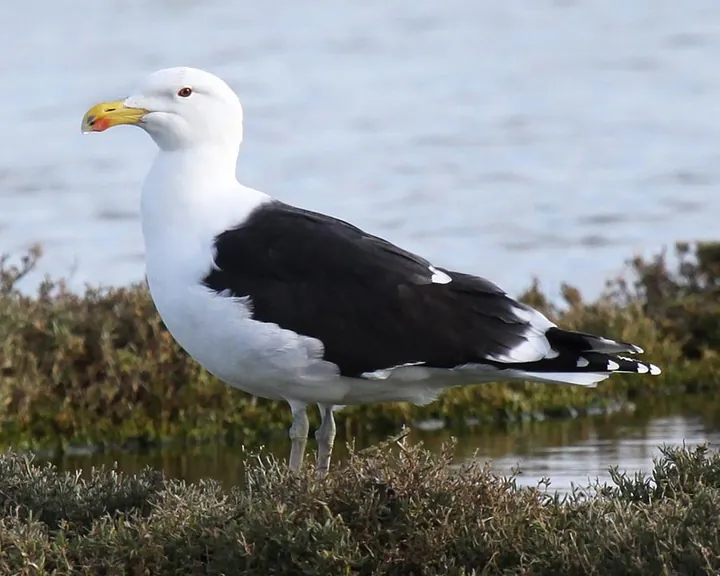
-
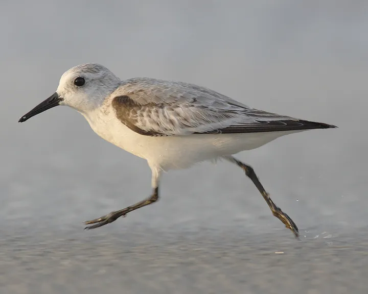
NordseeOstseeSanderling
SeevögelKleiner, heller Strandläufer, der wie ein Uhrwerk vor den auslaufenden Wellen hin und her rennt.
-
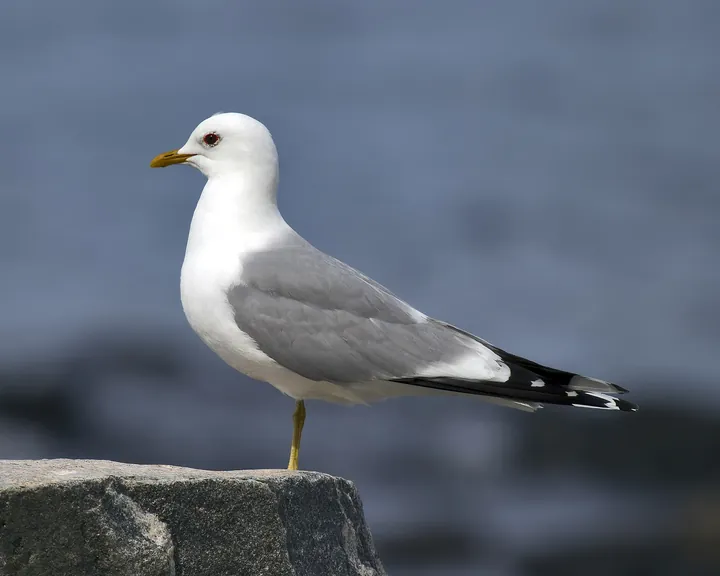
NordseeOstseeSturmmöwe
SeevögelMittelgroße Möwe mit freundlichem Gesicht: dünner, grüngelber Schnabel ohne roten Fleck und dunkles Auge.
-
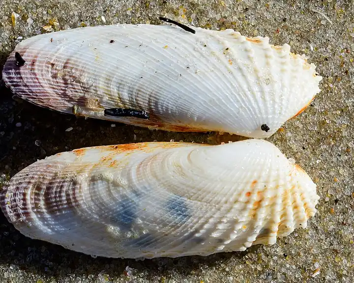
NordseeOstseeAmerikanische Bohrmuschel
MuschelnLängliche, weiße Muschel mit kräftigen Rippen und kleinen Zähnchen vorn, die an einen Flügel erinnert.
-
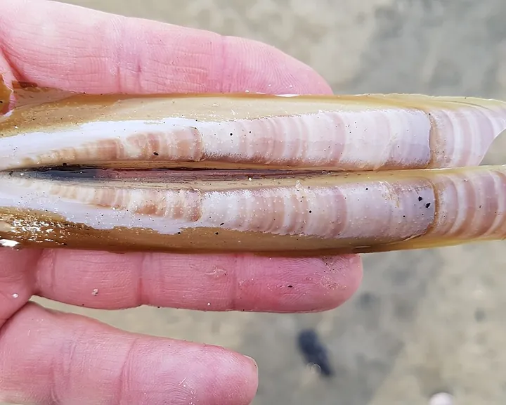
NordseeAmerikanische Schwertmuschel
MuschelnLange, schmale Muschel, die aussieht wie ein altes Rasiermesser.
-
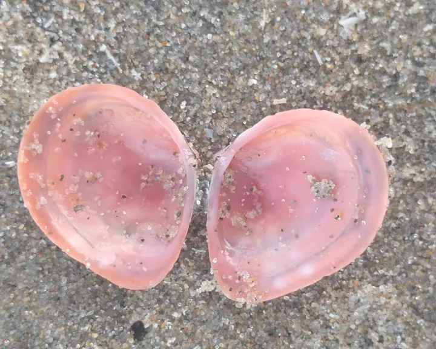
-
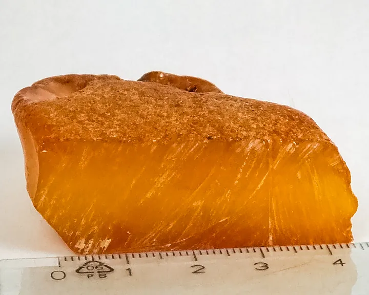
NordseeOstseeBernstein
StrandfundeGoldgelbes bis braunes, sehr leichtes Harz aus Wäldern, die vor rund 40 Millionen Jahren wuchsen.
-
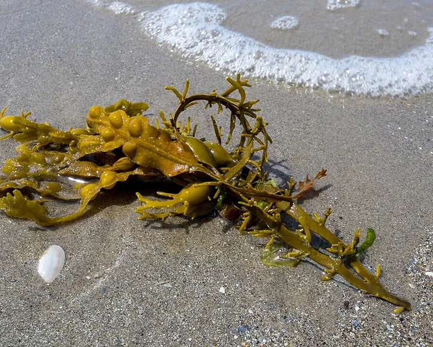
-
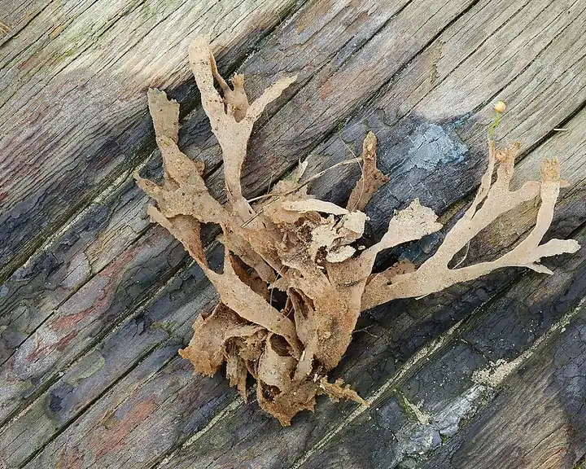
NordseeBlättermoostierchen
StrandfundeSieht aus wie ein hellbrauner Tang mit flachen Lappen, ist aber eine Kolonie aus winzigen Tieren und riecht nach Zitrone.
-
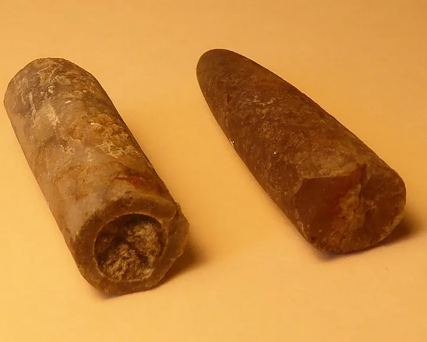
NordseeOstseeDonnerkeil (Belemnit)
StrandfundeSpitze, patronenförmige Versteinerung aus der Urzeit, der Rest eines ausgestorbenen Tintenfischs.
-
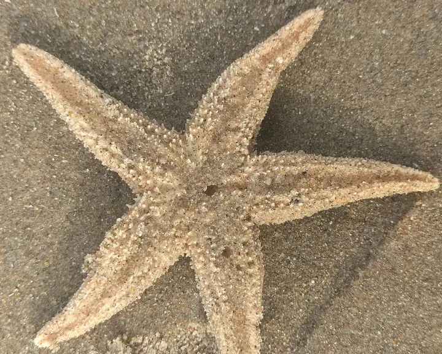
NordseeOstseeGemeiner Seestern
Seesterne & SeeigelOrange bis rotbrauner Seestern mit fünf Armen und vielen kleinen Füßchen auf der Unterseite.
-
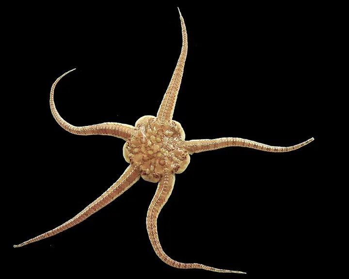
NordseeOstseeGewöhnlicher Schlangenstern
Seesterne & SeeigelSeestern mit kleiner runder Mittelscheibe und fünf dünnen, biegsamen Armen.
-
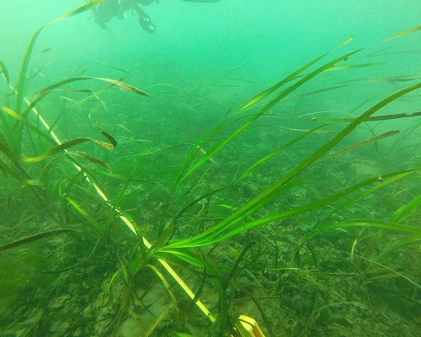
NordseeOstseeGewöhnliches Seegras
Tang & SeegrasGrasähnliche Meerespflanze mit langen, schmalen Blättern, die im Flachwasser Wiesen bildet.
-
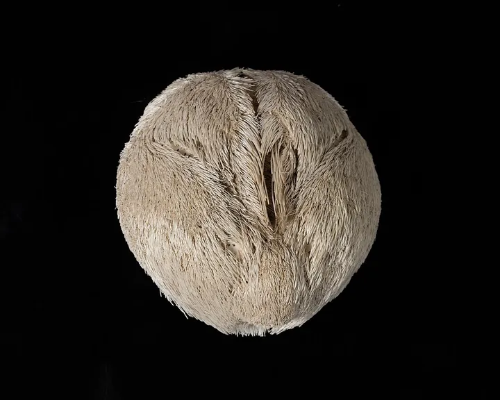
NordseeHerzigel
Seesterne & SeeigelSeeigel mit herzförmigem, sehr dünnem Gehäuse. Am Strand findest du meist nur die weiße Schale ohne Stacheln.
-
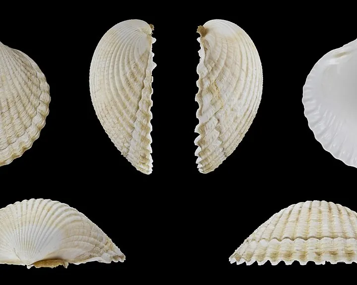
NordseeOstseeHerzmuschel
MuschelnRundliche, gerippte Muschel. Zwei Hälften zusammen sehen von der Seite aus wie ein Herz.
-
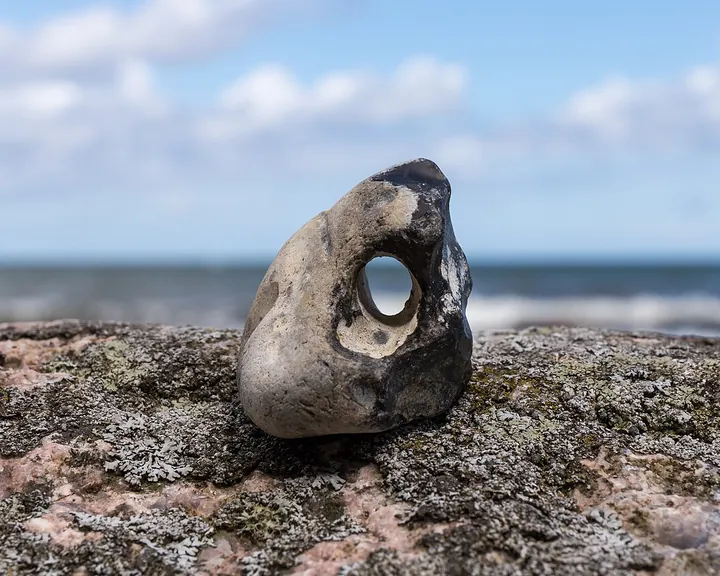
NordseeOstseeHühnergott
StrandfundeEin Feuerstein mit einem natürlichen Loch. Er gilt an der Küste als Glücksbringer.
-
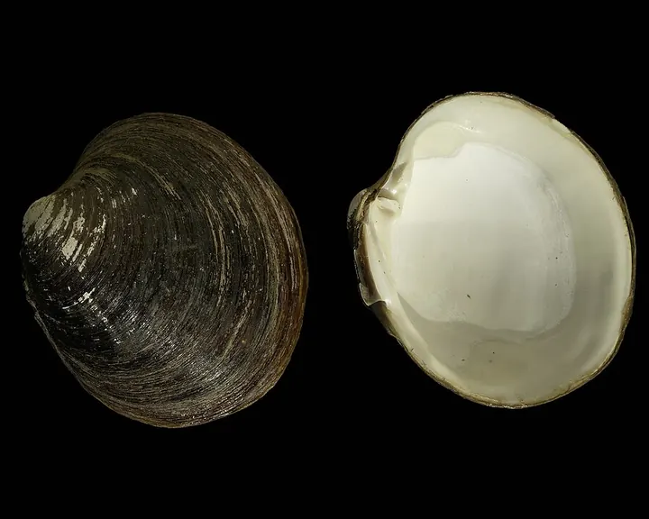
NordseeOstseeIslandmuschel
MuschelnGroße, dickschalige, runde Muschel mit dunkelbrauner bis schwarzer Haut auf der Schale.
-
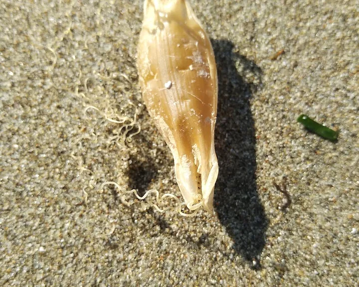
NordseeKatzenhai-Ei
StrandfundeGelbbraune, durchscheinende Eikapsel mit langen, gekringelten Ranken an den Ecken. Die Eihülle des Kleingefleckten Katzenhais.
-
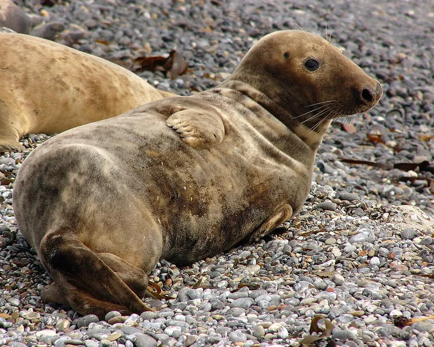
NordseeOstseeKegelrobbe
RobbenGrößtes Raubtier Deutschlands, mit langer, gerader Schnauze und weißen Jungen im Winter.
-
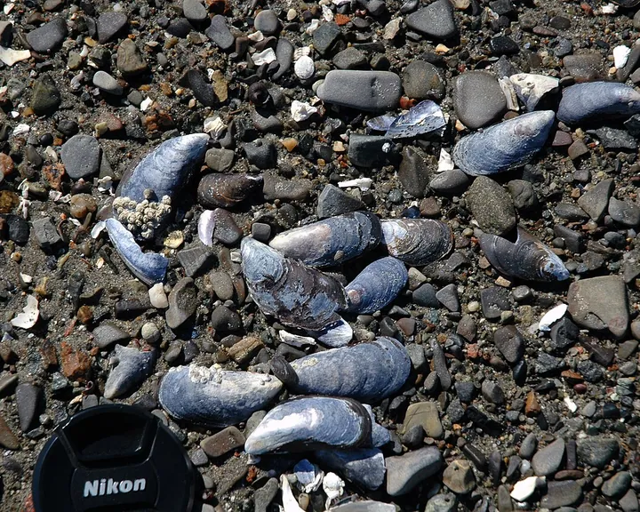
NordseeOstseeMiesmuschel
MuschelnLängliche, blauschwarze Muschel, die in dichten Bänken an Steinen, Buhnen und im Watt sitzt.
-
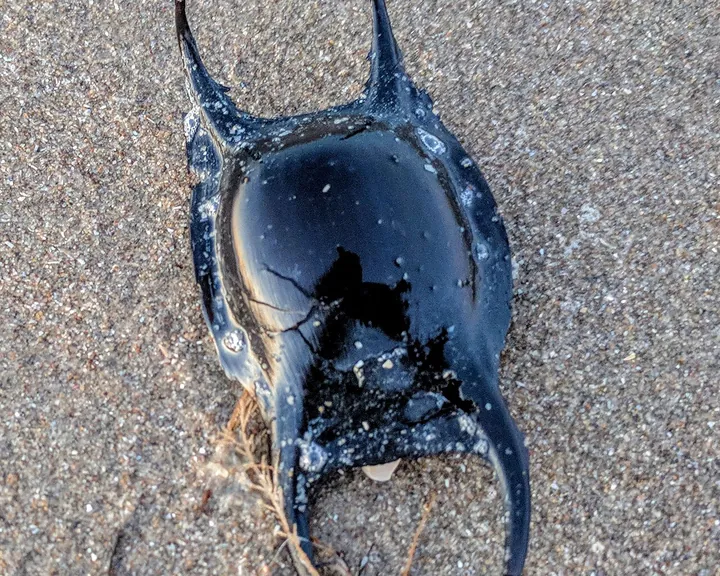
NordseeNixentäschchen (Rochen-Ei)
StrandfundeSchwarze, rechteckige Eikapsel mit vier Hörnchen. Darin ist ein junger Rochen herangewachsen.
-
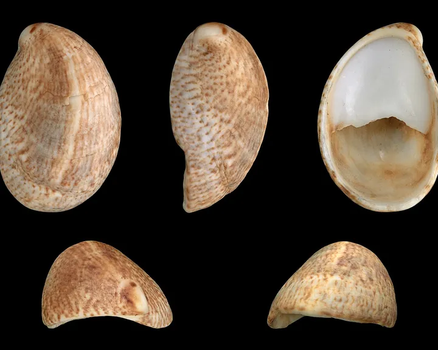
NordseePantoffelschnecke
SchneckenFlache Schnecke, die innen ein kleines Querbrett hat und dadurch aussieht wie ein Pantoffel.
-
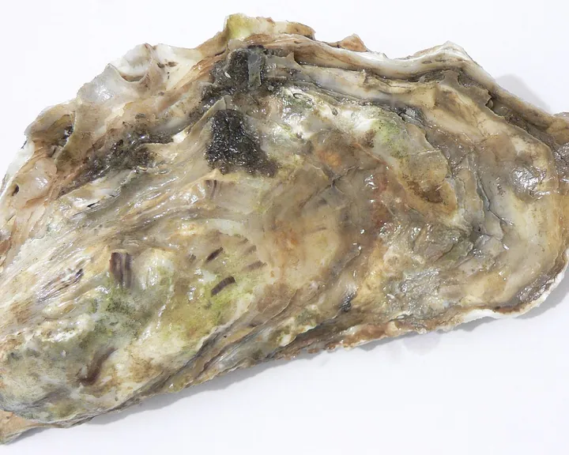
NordseePazifische Auster
MuschelnGroße, unregelmäßig geformte Muschel mit blättrig-schuppiger, grauer Schale.
-
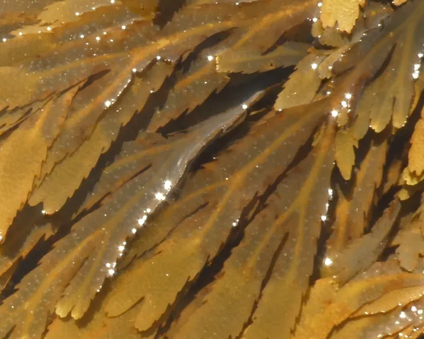
NordseeOstseeSägetang
Tang & SeegrasBrauntang ohne Luftblasen, mit fein gesägtem Rand und deutlicher Mittelrippe.
-
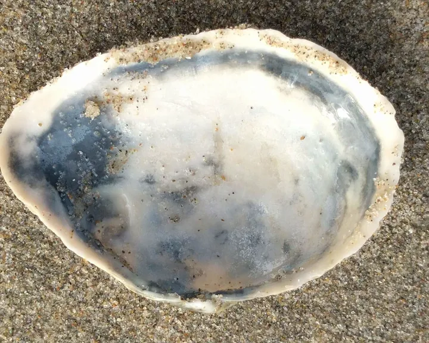
NordseeOstseeSandklaffmuschel
MuschelnGroße, ovale, kreideweiße Muschel, deren Hälften hinten nicht ganz schließen.
-
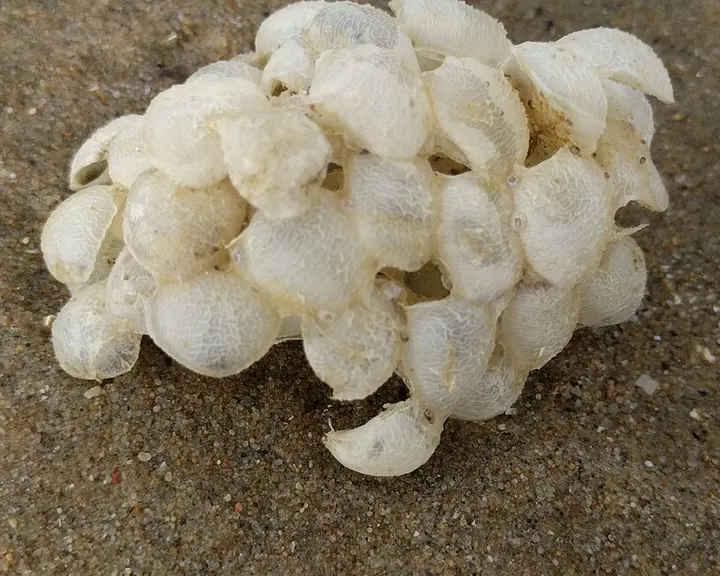
NordseeSeemannsseife (Laich der Wellhornschnecke)
StrandfundeHellgelber, schwammiger Ballen aus vielen kleinen, leeren Eikapseln, der beim Anfassen raschelt.
-
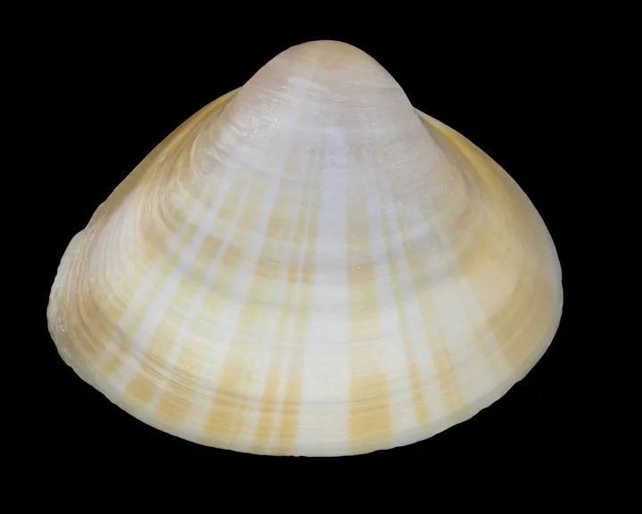
NordseeStrahlenkörbchen
MuschelnDreieckig-ovale, dünne Muschel, cremeweiß mit hellbraunen Strahlen vom Wirbel zum Rand.
-
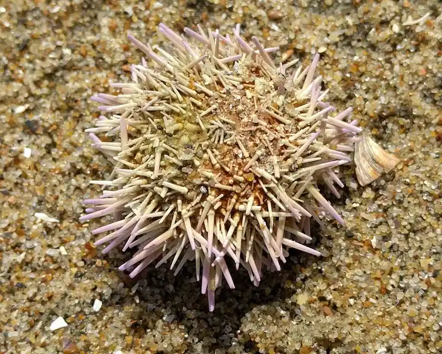
NordseeOstseeStrandseeigel
Seesterne & SeeigelKleiner Seeigel mit kurzen, grünlichen bis hellen Stacheln, deren Spitzen violett sind.
-
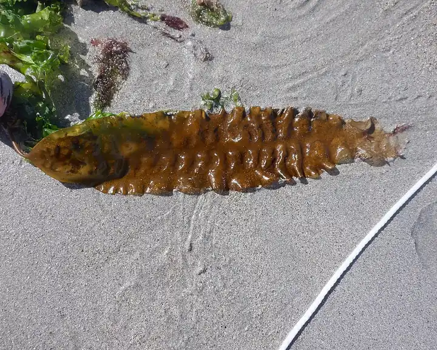
NordseeOstseeZuckertang
Tang & SeegrasLanges, bandförmiges, gelbbraunes Blatt mit gewelltem Rand und einem kurzen Stiel mit Haftkralle.
Außerdem zu finden
-
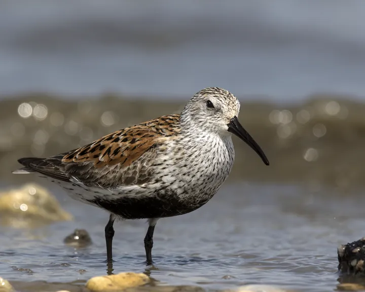
NordseeOstseeAlpenstrandläufer
SeevögelDer häufigste Watvogel im Wattenmeer, mit leicht gebogenem Schnabel. Im Sommer trägt er einen schwarzen Bauchfleck.
-
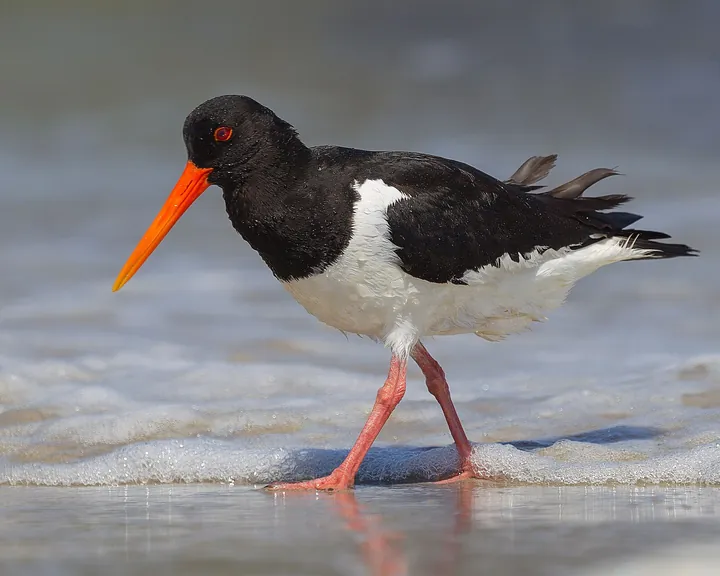
NordseeOstseeAusternfischer
SeevögelSchwarz-weißer Watvogel mit leuchtend orangerotem Schnabel und lautem, schrillem Ruf.
-
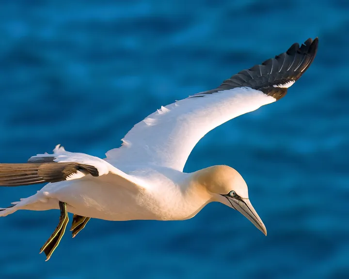
NordseeBasstölpel
SeevögelGroßer weißer Seevogel mit schwarzen Flügelspitzen und gelblichem Kopf, der sich wie ein Pfeil ins Meer stürzt.
-
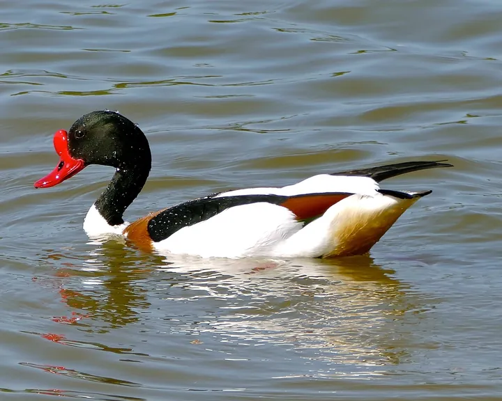
NordseeOstseeBrandgans
SeevögelBunte Halbgans: weiß mit rostbraunem Brustband, dunkelgrünem Kopf und leuchtend rotem Schnabel.
-
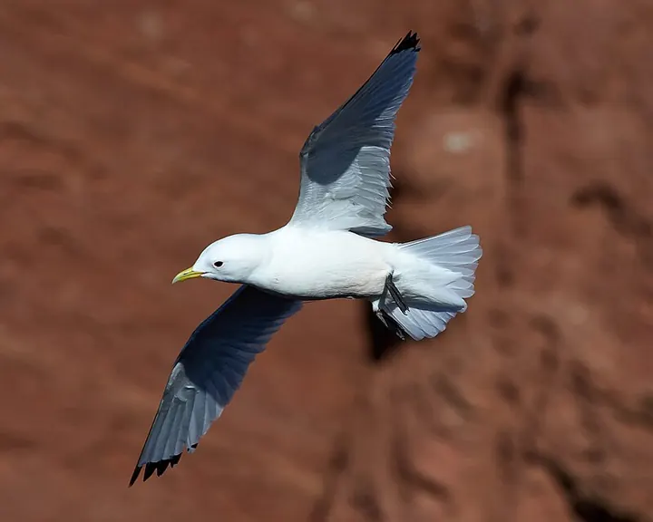
NordseeDreizehenmöwe
SeevögelZierliche Hochseemöwe mit gelbem Schnabel ohne Fleck, schwarzen Beinen und Flügelspitzen wie in Tinte getaucht.
-
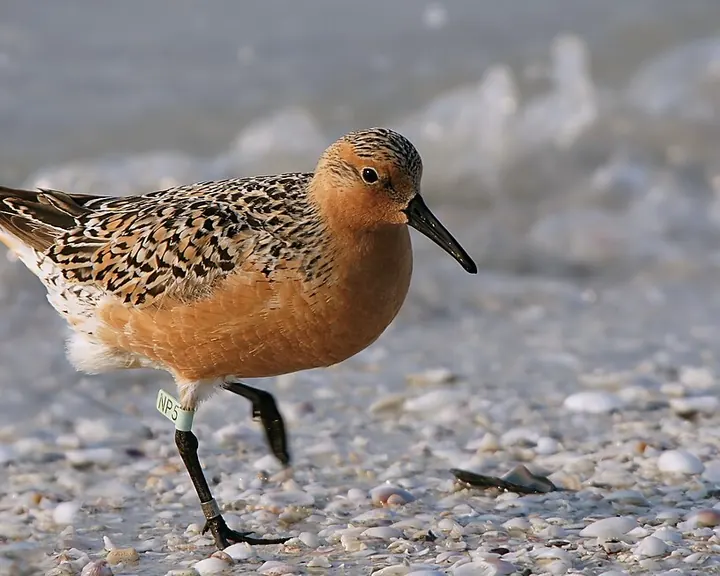
NordseeOstseeKnutt
SeevögelRundlicher, kurzbeiniger Watvogel: im Winter schlicht grau, im Frühjahr mit rostroter Brust.
-
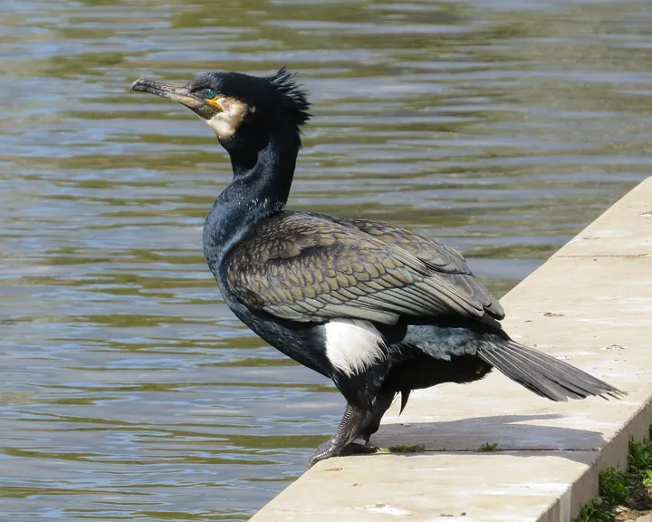
NordseeOstseeKormoran
SeevögelGroßer, dunkler Wasservogel, der oft mit ausgebreiteten Flügeln auf Buhnen und Pfählen sitzt.
-
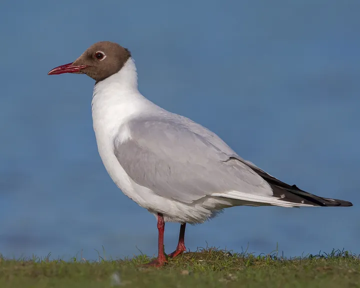
NordseeOstseeLachmöwe
SeevögelKleine, wendige Möwe mit dunkelrotem Schnabel. Im Sommer trägt sie eine schokoladenbraune Kappe.
-
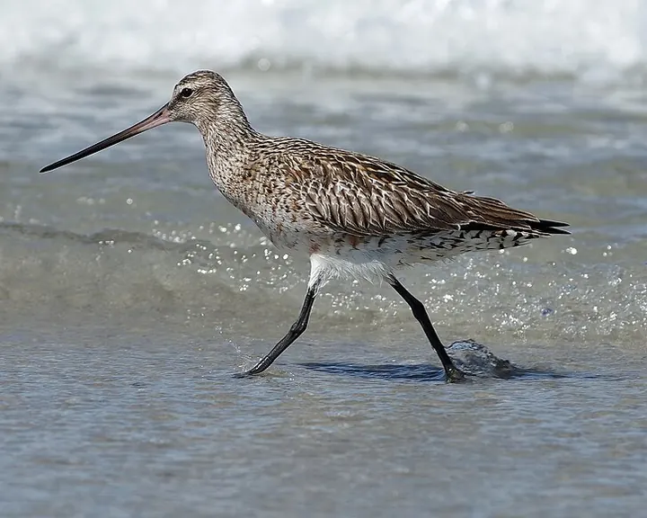
-
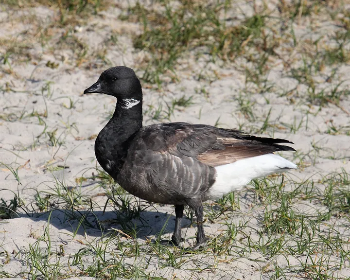
NordseeOstseeRingelgans
SeevögelKleine, dunkle Meeresgans mit schwarzem Kopf und Hals und einem schmalen weißen Halsring.
-
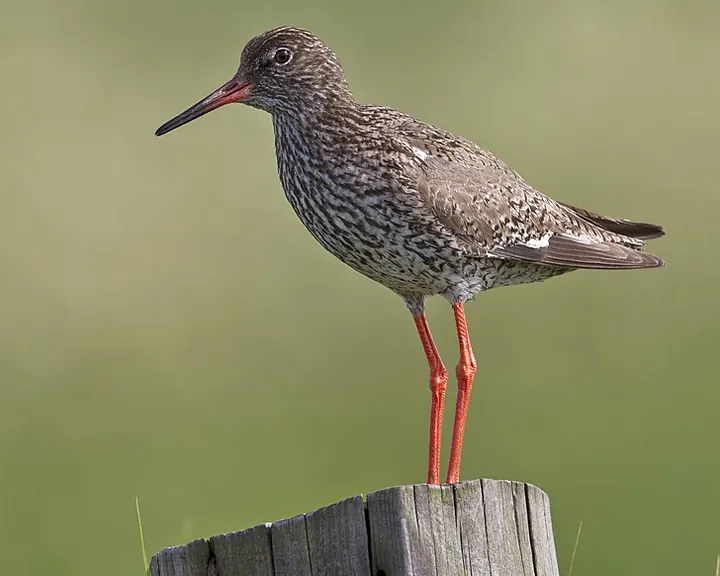
NordseeOstseeRotschenkel
SeevögelGraubrauner Watvogel mit leuchtend roten Beinen und rotem Schnabelansatz, laut und schreckhaft.
-
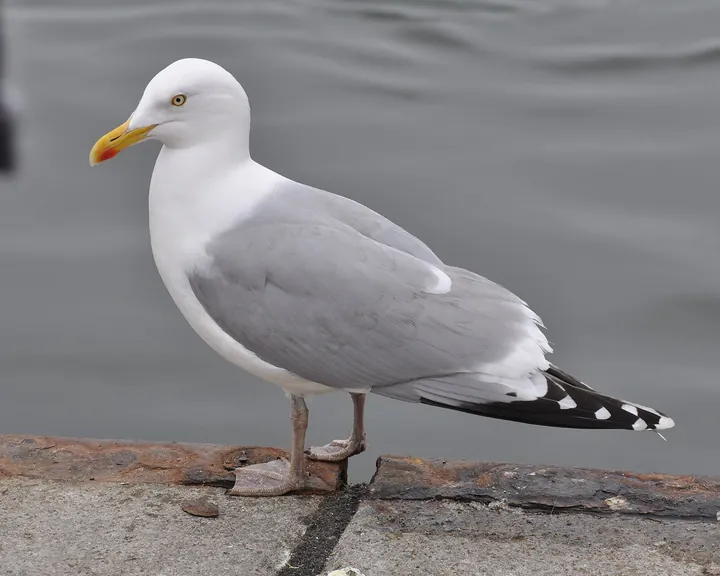
NordseeOstseeSilbermöwe
SeevögelDie typische große Möwe an Nord- und Ostsee: hellgrauer Rücken und gelber Schnabel mit rotem Fleck.
-
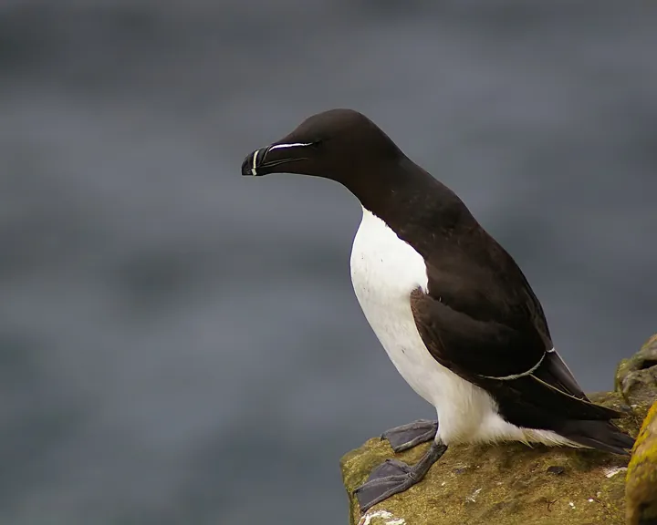
NordseeOstseeTordalk
SeevögelSchwarz-weißer Alkenvogel mit hohem, seitlich flachem Schnabel und feinem weißem Strich darauf.
-
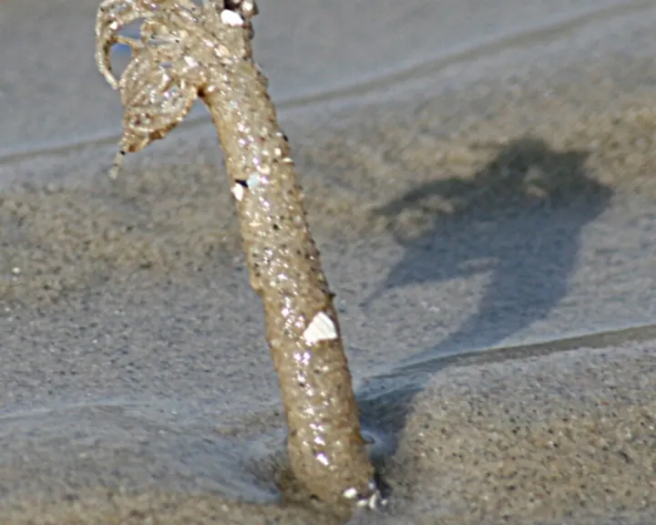
NordseeBäumchenröhrenwurm
Krebse & WürmerWurm, der in einer Röhre aus Sandkörnchen lebt. Oben ragt ein ausgefranstes Bäumchen aus dem Watt.
-
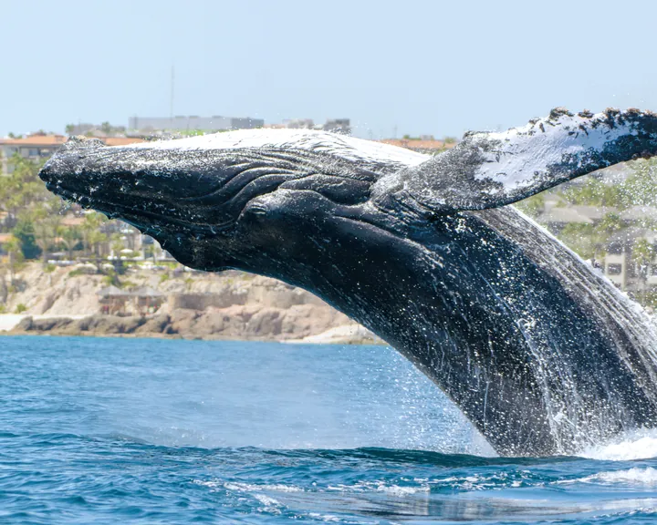
NordseeOstseeBuckelwal
Wale & DelfineGroßer Bartenwal mit sehr langen, weißen Brustflossen, der beim Abtauchen oft die Schwanzflosse zeigt.
-
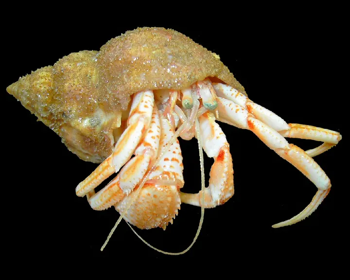
NordseeEinsiedlerkrebs
Krebse & WürmerKrebs mit weichem Hinterleib, der in einem leeren Schneckenhaus wohnt und es mit sich herumträgt.
-
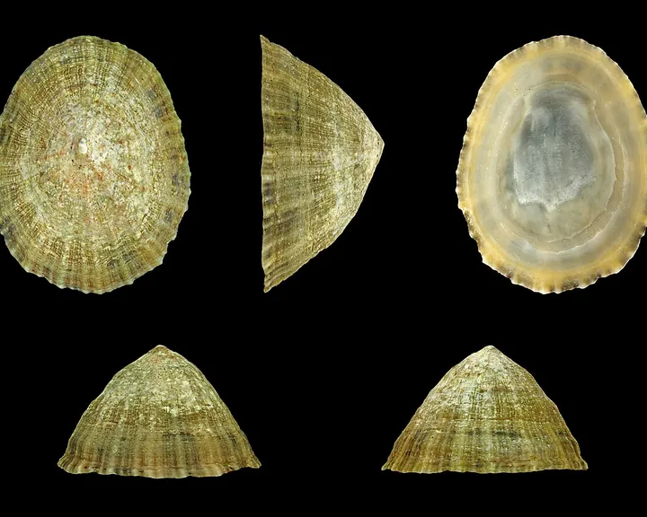
NordseeGemeine Napfschnecke
SchneckenKegelförmige Schnecke wie ein kleiner Hut, die sich fest an Felsen saugt.
-
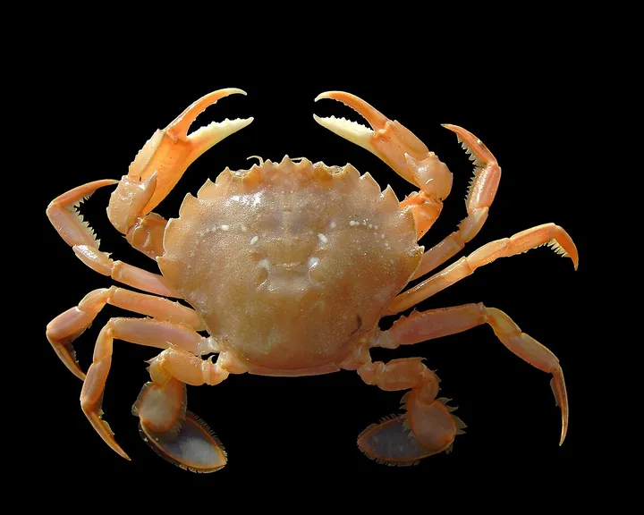
NordseeOstseeGemeine Schwimmkrabbe
Krebse & WürmerMittelgroße graue Krabbe, deren letztes Beinpaar zu flachen Paddeln geformt ist.
-
Gemeine Strandschnecke
SchneckenKleine, kegelförmige Schnecke mit dunkler, fein gestreifter Schale.
-
Gemeine Wattschnecke
SchneckenWinzige, spitze, braune Schnecke, die bei Ebbe in riesiger Zahl auf dem Watt sitzt.
-
Großer Tümmler
Wale & DelfineDer bekannte „Flipper“-Delfin: grau und kräftig, mit kurzer, deutlich abgesetzter Schnauze.
-
-
Meerwalnuss
QuallenDurchsichtige, walnussförmige Rippenqualle mit zwei großen Lappen und schillernden Wimpernreihen.
-
Nordseegarnele
Krebse & WürmerKleine, sandfarbene Garnele, die sich blitzschnell im Sand eingräbt. Auf dem Teller heißt sie Krabbe.
-
Pottwal
Wale & DelfineRiesiger Zahnwal mit kastenförmigem Kopf, der in der flachen Nordsee nur als Irrgast auftaucht.
-
Schweinswal
Wale & DelfineDer einzige heimische Wal. Klein, scheu und mit dreieckiger Rückenflosse.
-
Seehund
RobbenHäufigste Robbe an der Nordsee mit rundem Kopf, kurzer Schnauze und großen dunklen Augen.
-
Seepocke
Krebse & WürmerKleiner weißer Kegel aus Kalkplatten auf Steinen und Muscheln. Darin wohnt ein Krebs, der auf dem Kopf steht.
-
Sepiaschale
StrandfundeWeiße, ovale und sehr leichte Platte. Es ist die innere Schale eines Tintenfischs, des Gemeinen Tintenfischs.
-
Strandkrabbe
Krebse & WürmerHäufigste Krabbe an unseren Küsten, grünlich bis braun, mit fünf Zacken an jeder Panzerseite.
-
Taschenkrebs
Krebse & WürmerGroßer, rotbrauner Krebs mit ovalem Panzer, dessen Rand wie eine Pastetenkruste gekerbt ist.
-
Wattwurm
Krebse & WürmerGroßer Wurm, der in einer U-förmigen Röhre im Watt lebt. Bekannt sind seine geringelten Sandhaufen.
-
Weißschnauzendelfin
Wale & DelfineKräftiger Delfin mit kurzer, heller Schnauze und großen weißen und grauen Flecken an den Flanken.
-
Wellhornschnecke
SchneckenGroße Meeresschnecke mit welligen Rippen. Ihre Laichballen sehen aus wie ein gelber Schaumstoffklumpen.